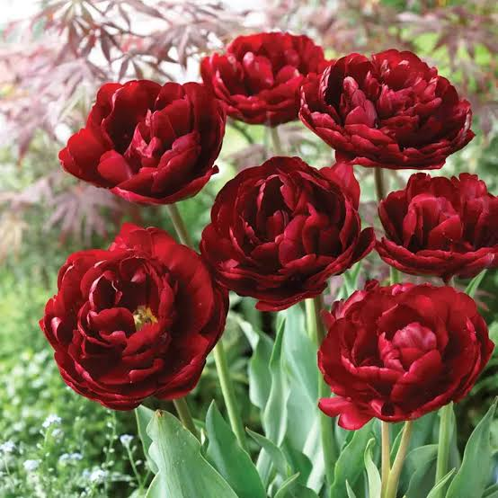

Favorite color and flowers in one pic<3


Welcome to my page!
My name is Mary Grace Ofalla and I am from the BSOAD 2-A class. I live in Barangay Igcaratong, San Joaquin, Iloilo and I am 21 years of age.
My hobbies and interests mostly revolved around writing, singing, music, and reading. I think of myself as average in a lot of things especially on my the skills that I have acquired through my experiences over the years but that never stopped me from becoming who I am now.
My career goals are to have a stable income and job in the future.

Mary Grace Ofalla added a post!

Favorite color and flowers in one pic<3